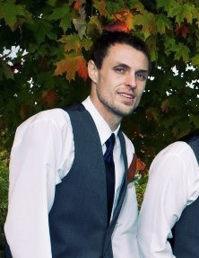

About Me
I graduated high school in 2001 from Lowville Academy and Central School and attended S.U.N.Y Brockport in Rochester, New York. I received my Bachelors Degree in Business Adminstration in 2006. While there I was the starting goalie on the varsity Lacrosse team and currently have 2 school records. Currently, I have the most saves in a season and most safes in a game.
After graduating college, I entered the sales world and received my first job role as a sales representative at Cutco Inc. While this was fun, I wanted to do more and see more of the United States, so I decided to move to Raleigh, North Carolina on a whim. I have never regreted this decision and see how this city is expanding and growing and becoming one my favorite cities in the United States.
Shortly after moving down from New York I was diagnosed with stage IV Germ Cell cancer and battled that for 3 years. I finally rid my cancer after completing 3 months (3 sessions) of Bone Marrow/Stem Cell Transplants and having been in remission now for 5 years! But, while I was undergoing chemo and all the other procedures, I realized I needed to make important changes in my life, for example; diet, exercise and career. Now I want to better myself with computer technology and expand my knowledge in the computer world.